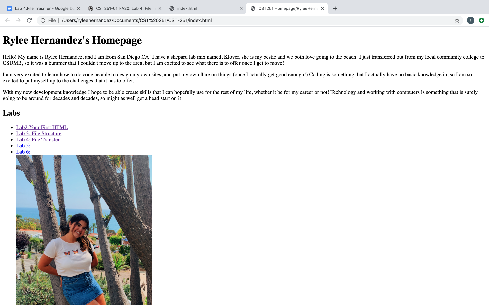
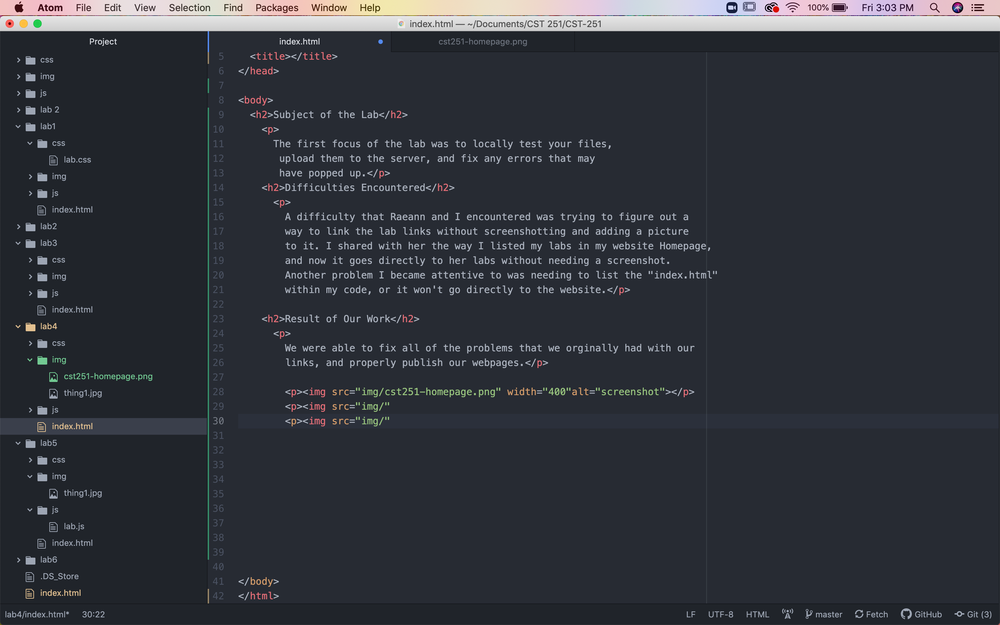

The first focus of the lab was to locally test your files, upload them to the server, and fix any errors that may have popped up.
A difficulty that Raeann and I encountered was trying to figure out a way to link the lab links without screenshotting and adding a picture to it. I shared with her the way I listed my labs in my website Homepage, and now it goes directly to her labs without needing a screenshot. Another problem I became attentive to was needing to list the "index.html" within my code, or it won't go directly to the website.
We were able to fix all of the problems that we orginally had with our links, and properly publish our webpages.

